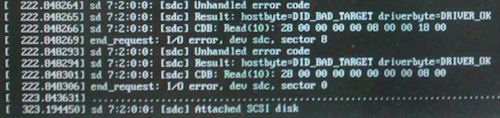

Operating Documentation
Direction 5193574-800, Rev# 22
LightSpeed 7.X Service Methods
Module Version 2.0, Version Date 6/29/15
Operating Documentation |
| Last Revised: | December 25, 2013 |
Possible Cause
In case of Z820 computer, if more than two scan data disks are failed at the same time, the OS will not start up indicating the following error on display.
Illustration 1: Error - Display

Troubleshooting
Hit the Enter key. If the problem is caused by multiple scan disk failure, the OS startup process will be resumed.
After OS is started up, the scan data disk error will be indicated in pop up window. Isolate the defective scan data disk by using gre-raid -q command.
Problem
SSA key may be corrupted if the key is not unmounted before it’s removed from the console.
Solution
The following shows the procedure how to unmount the SSA key (file system).
Open a Unix shell
$ su - [Enter]
Enter root password
# umount /media/SSA
# exit
Remove the key.
Close CSD screen, execute "Check Security", move to ImageWorks desktop and back to CSD desktop to exit class M environment.
| NOTE: | If you encountered the following message, exit any shell
that refers to /media/SSA/ or /media/. umount: /media/SSA: device is busy |